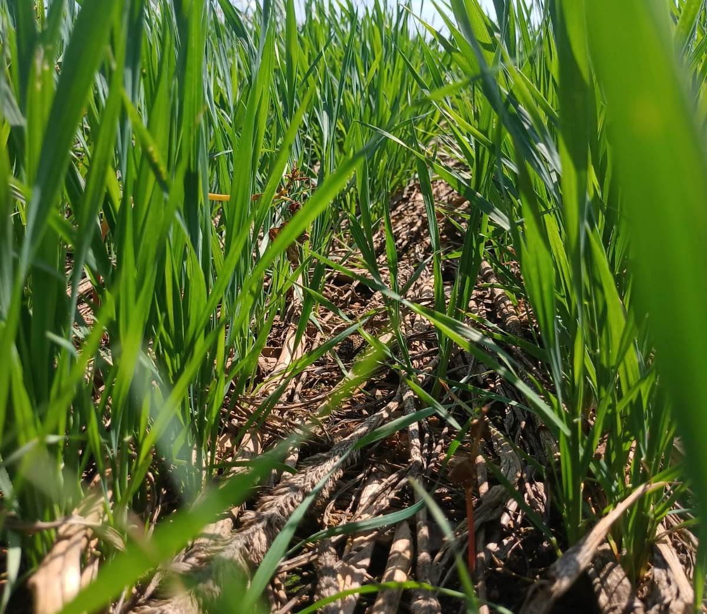

| Rod GO 436 Km 62 , Sn Cristalina - GO |
| Rod GO 010 Km 210 , Sn Luziânia - GO |
Colheita prevista para ser iniciada em 03/07/2023, expectativas de produtividade dentro do esperado
Os preparativos para inicio da colheita da cultura segue em faze de finalização, areas previamente dessecadas, aguardando abertura total dos capulhos, maquinas em testes para inicio da colheita.
Algodão |
|
| Fase final, aguardando início da colheita. | |
Soja |
Finalizada, aguardando planejamento para próxima safra (23/24) |
Trigo |
 | Fase de crescimento, dentro do planejado. |
Milho Semente |
Parte dos Pivôs em andamento, do Milho semente 1º Etapa. |
Sorgo Safrinha |
Cultura está melhor que nas safras passadas, gerando espectativa de produtividade acima do projetado |
Tomate |
Plantio de 219 hectáres de tomate em andamento , plantio adequado, bem executado. |